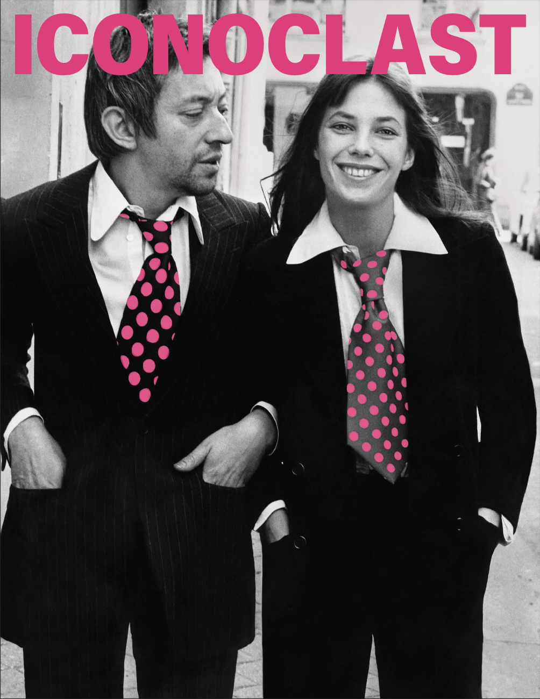
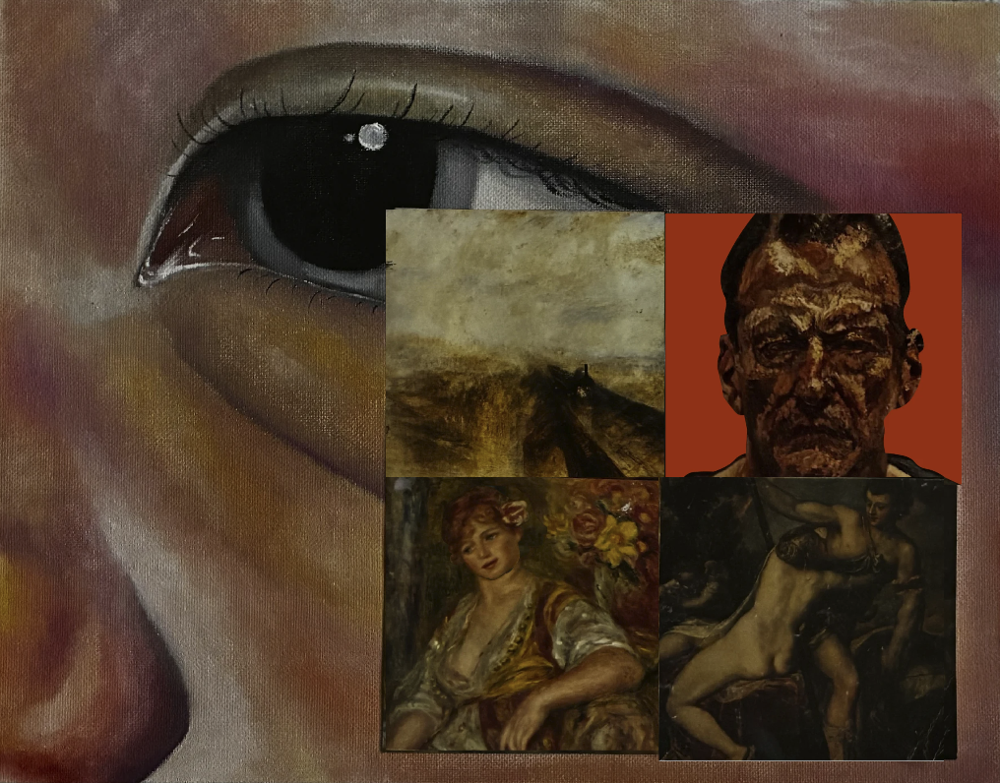
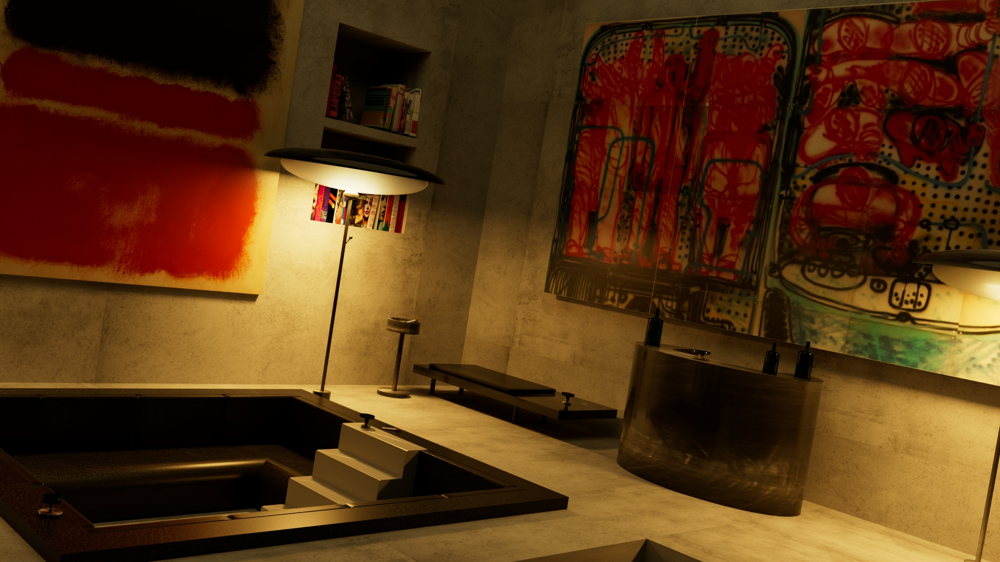
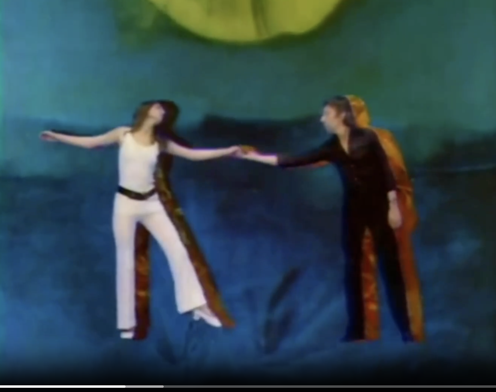

Visual Foundation Studio was one of the first classes I took in NYU’s IDM program. It was a graphic design class, and it built my visual design foundation.

Creative Coding was another one of my first classes in IDM. I learned how to make art with code using Processing and p5.js.

I learned how to use Autodesk’s Maya for 3D modeling in NYU’s IDM program.

Audio Foundation Studio in NYU’s IDM program taught me how to create music, sound art, and sound design using REAPER.